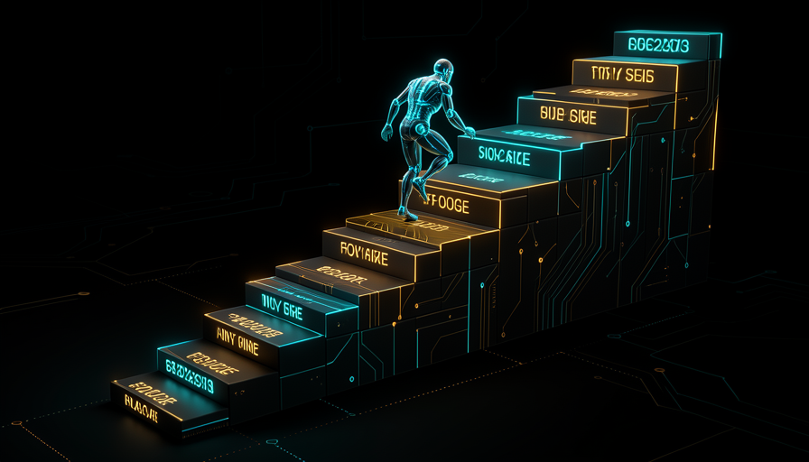

📏 O que é "horizonte de tarefa"
Existe um jeito de transformar a frase vaga "a IA está ficando boa" em um número que dá para acompanhar. O número é o horizonte de tarefa: a maior tarefa — medida em quanto tempo um humano levaria para fazê-la — que o modelo completa com cerca de 50% de sucesso. Se a IA termina sozinha tarefas que tomariam 12 horas de um humano, dizemos que seu horizonte é de 12 horas.
🆕 Novo aqui? Três termos antes de seguir
- METR: uma organização independente (não é lab nem fabricante de modelo) que avalia a capacidade e o risco dos modelos de fronteira — os mais avançados, de labs como Anthropic, OpenAI e DeepMind. É quem produz a curva.
- Horizonte de tarefa: a régua. Quanto trabalho humano, em tempo, a IA aguenta de ponta a ponta.
- Taxa de sucesso de 50%: o ponto de corte. Não é "sempre acerta"; é "acerta metade das vezes" — o lugar onde a tarefa começa a ficar grande demais para o modelo.
🎯 Por que medir em tempo-humano
Medir em "tempo que um humano levaria" é genial porque é a unidade que todo mundo entende. "Resolve 56% das questões" não diz nada sobre o tamanho do trabalho. "Faz sozinha algo que te tomaria um dia" diz tudo. A curva não mede inteligência abstrata — mede autonomia útil.
📈 A curva: 4 min → ~1,5 h → ~12 h → 16 h+
De março de 2024 a 2026, o horizonte medido pela METR saiu de poucos minutos e chegou a mais de meio dia de trabalho. A escada no topo da página mostra isso: 4 min, depois ~1,5 h, depois ~12 h, depois 16 h+. O que importa não é cada degrau isolado, e sim a inclinação: a régua dobra em intervalos curtos.
Como ler: à esquerda (tarefas curtas) quase tudo é acerto; à direita (tarefas longas) quase tudo é erro. A linha tracejada marca onde a IA acerta metade das vezes — esse ponto, em tempo-humano, é o horizonte.
💡 Dica de leitura
Não decore os números — decore a forma. Uma curva que dobra a cada poucos meses é exponencial; e exponenciais enganam a intuição, que espera retas. É por isso que o horizonte "de repente" passou de minutos para horas.
🧱 16 h foi o limite do TESTE, não do modelo
Aqui mora o erro de leitura mais comum. A própria METR avisou: acima de 16 horas, as medições daquela suíte deixavam de ser confiáveis. Ou seja, "16 h" é o teto do instrumento — até onde o teste consegue medir direito —, e não a fronteira do que o modelo é capaz de fazer.
⚠️ Cuidado com a manchete
Ler "16 h" como "o máximo que a IA consegue" é o oposto do que o dado diz. Pode ser que o modelo vá além — só não dá para afirmar com aquele teste. Tratar um teto de medição como teto de capacidade é como dizer que um carro só anda 200 km/h porque é até onde o velocímetro marca.
✓ Leitura honesta
- ✓"O teste mede bem até ~16 h."
- ✓"A tendência continua subindo."
- ✓"Precisamos de testes melhores acima disso."
✗ Leitura enganosa
- ✗"A IA trava em 16 h."
- ✗"Esse é o limite definitivo."
- ✗"Chegou ao teto, pode relaxar."
⏱️ Por que long-horizon importa pro RSI
O auto-aperfeiçoamento recursivo (RSI) — a IA que ajuda a projetar a próxima IA — não exige um gênio que resolve tudo num instante. Exige um trabalhador útil por horas e dias seguidos: que mantenha o fio do problema, rode experimentos, espere resultados e continue. É por isso que o long-horizon (horizonte longo) é a peça que conecta esta trilha ao alerta inteiro.
Horizonte curto × horizonte longo
🔗 A ponte para o próximo módulo
Guarde esta ideia: se a IA já aguenta horas de trabalho contínuo, a pergunta seguinte é "que tamanho de projeto ela termina sozinha?". É exatamente o que o MirrorCode mede — e onde veremos uma execução rodando por dias sem humano (Módulo 2.2).
🔬 Como se mede (e por que é difícil)
Mede-se assim: junta-se um monte de tarefas de durações conhecidas (sabe-se quanto um humano levaria em cada uma), roda-se o modelo em todas e procura-se a duração em que ele acerta cerca de metade das vezes. Esse ponto é o horizonte. Simples de dizer, difícil de fazer bem — por três motivos.
Variância
A mesma tarefa pode dar certo numa rodada e errar na outra. Por isso se roda muitas vezes e se trabalha com médias — não com um único teste.
Estimar o tempo-humano
Quanto "vale" uma tarefa em horas de gente? É uma estimativa, e estimativas têm margem. Dois avaliadores podem discordar.
O teste alcança o próprio limite
Perto do topo (as 16 h do Tópico 3), faltam tarefas longas o bastante e bem medidas. O instrumento fica curto antes do modelo.
⌨️ Exemplo copy-run · sinta o horizonte no seu próprio trabalho
Objetivo: treinar o olho para distinguir tarefa de horizonte curto de tarefa de horizonte longo, usando o seu dia. Cole o bloco abaixo em qualquer chatbot.
Como verificar: a resposta deve distinguir tarefas de minutos (horizonte curto) de tarefas de horas/dias (horizonte longo) — e não só "a IA faz tudo". Se ela não separar os dois, peça de novo.
🧭 O que a curva NÃO prova
A curva é uma evidência forte de uma tendência. Ela não é uma prova de destino. Esticar a reta no gráfico e cravar "logo a IA fará tarefas de meses" é trocar medição por profecia. A postura honesta do curso é levar o dado a sério e marcar onde ele acaba e a especulação começa.
🟢 Sólido (a curva sustenta)
- ✓O horizonte de tarefa vem subindo de forma consistente.
- ✓Em 2024–2026, saiu de minutos para mais de meio dia.
- ✓A METR é uma fonte independente, com método transparente.
🟡 A verificar / especulação
- ▲"A reta continua igual e chega a tarefas de semanas."
- ▲Uma data exata para o horizonte cruzar X horas.
- ▲Que o ritmo de hoje é garantido para amanhã.
💡 A regra de ouro do curso
Tendência observada = sólido. Data de chegada = palpite. Toda vez que alguém juntar os dois numa frase só, separe-os antes de acreditar. A curva diz "está subindo rápido" — não diz "vai chegar em tal ano".

Auto-checagem (opcional): o que significam as "16 horas" na curva da METR?
🎯 Resumo do módulo
Próximo módulo:
2.2 — MirrorCode: reconstruir no escuro. Da "quanto tempo aguenta" para "que tamanho de projeto termina sozinha".